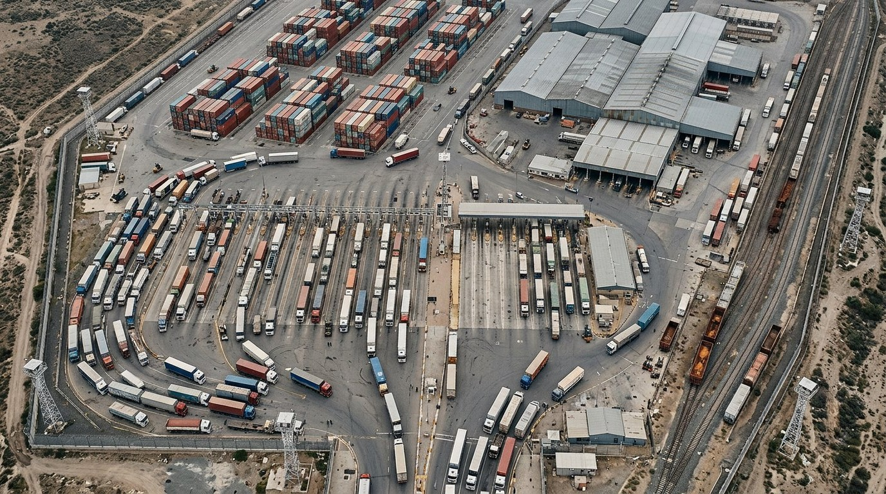
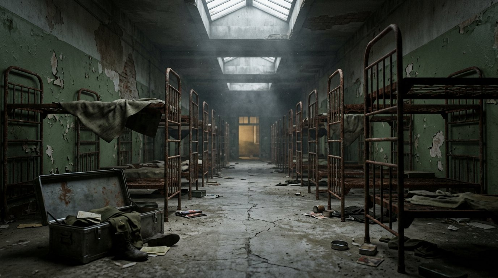

Repères et accès
Les Douanes occupent une large part du parc industriel voisin de l’Usine : terminal douanier, stockage de carburants, bureaux, dortoirs et une infrastructure diverse. L’accès direct se débloque avec le chapitre Tour ; jusque-là, on n’y entre que par transit. Fiche publique.
Volume
35 minutes, 10 à 12 PMC, tous niveaux admis. 278 points de spawn relevés : c’est la deuxième carte la plus dense du jeu.
Structure
Un axe nord-sud de deux kilomètres, large, avec peu de couverture naturelle. Les longs moments de course sont le principal risque.
Équipement fixe
Des armes fixes de type AGS-30 et NSV Utyos, et des snipers de bordure signalés par des panneaux.
Sniper de bordure. Les snipers de bordure sont invisibles, ne peuvent pas être tués et tirent à travers les obstacles. Se mettre à couvert ne sert à rien : la seule réaction utile est de se replier immédiatement. La fiche publique signale trois zones de ce type sur les Douanes.

Sorties et transits
Seize sorties sont documentées : six pour les PMC, cinq pour les Scavs, cinq partagées. Le patch 1.2.0.0 du 6 octobre 2026 a rééquilibré les sorties PMC et Scav du lieu, ajouté de nouvelles sorties et deux clés — la clé ZB-1013 et la clé du poste de garde. Notes du patch 1.2.0.0.
Sorties documentées
Fiche publique et patch 1.2.0.0.
| Sortie | Camp | Toujours ouverte | Usage unique | Conditions | Notes | |
|---|---|---|---|---|---|---|
| Dorms V-Ex | PMC | ✘ | ✔ | per player Maximum of 4 players | The fee amount is influenced by your Scav karma. | pmc |
| Railroad Passage (Flare) | PMC | ✔ | ✘ | Shoot a green flare into the sky while inside the signal flare area. If the flare doesn't reach a certain height, the extraction won't open. ; Flares: ; Handheld RSP-30 green flare ; Signal pistol fired 26x75mm green flare ; Only one person amongst a lobby-made group needs to shoot a flare to open the extraction for all members of the group. | Upon entering the signal flare area, a notification will pop up in the bottom right corner of the screen: ; If the flare was fired correctly, a new notification pops up: ; ; ; Signal flare area and extract zone map ; | pmc |
| ZB-1013 | PMC | ✔ | ✘ | ; Activate lever in warehouse #4 at the crane yard. ; + ; ; Used to open the door to the extraction | ; In the basement of the Scav base. | pmc |
| Administration Gate | Scav | ✔ | ✘ | — | — | scav |
| Gate Near Medblock | Scav | ✔ | ✘ | — | — | scav |
| Railroad to Port | Scav | ✔ | ✘ | — | — | scav |
| Railroad to Tarkov | Scav | ✔ | ✘ | — | — | scav |
| Reserve Checkpoint | Scav | ✔ | ✘ | — | — | scav |
| Boiler Room Basement (Co-op) | Partagée | ✔ | ✘ | Scav + PMC | ; In the basement of the boiler building with the 2 chimneys in the construction area. | shared |
| Crossroads | Partagée | ✔ | ✘ | — | — | shared |
| Old Gas Station | Partagée | ✔ | ✘ | Green flares = Open for PMCs | In the basement. | shared |
| Railroad to Reserve | Partagée | ✔ | ✘ | — | — | shared |
| Smugglers' Boat | Partagée | ✔ | ✘ | Note with code word Voron | — | shared |
| Smugglers' Bunker (ZB-1012) | Partagée | ✔ | ✘ | Note with code word Voron | — | shared |
| Trailer Park | Partagée | ✔ | ✘ | In the trees. | — | shared |
| ZB-1011 | Partagée | ✔ | ✘ | — | — | shared |
Transits sortants
Quatre destinations, disponibles une minute après le début du raid.
| Transit | Destination | Camp | Conditions | Emplacement |
|---|---|---|---|---|
| Transit vers la base militaire | reserve | PMC et Scav | Only available 1 min after raid start | — |
| Transit vers l'usine | factory | PMC et Scav | Only available 1 min after raid start | Next to the Old Gas Station extraction |
| Transit vers l'échangeur | interchange | PMC et Scav | Only available 1 min after raid start | Next to the Trailer Park extraction, inside the bus |
| Transit vers le littoral | shoreline | PMC et Scav | Only available 1 min after raid start | — |
Intitulés de jeu
Vingt-huit intitulés recensés par l’instantané des données.
| Libellé français | Intitulé de jeu | Camp | Commandée par un interrupteur | Correspondance |
|---|---|---|---|---|
| Ancienne station-service | ex customs pmc gasstation | PMC | oui | absente de la fiche publique |
| Barrage RUAF | RUAF Roadblock | PMC | oui | absente de la fiche publique |
| Bateau des contrebandiers | ex customs secret voron boat | PMC | oui | absente de la fiche publique |
| Bunker des contrebandiers (ZB-1012) | ex customs secret voron bunker | PMC | oui | absente de la fiche publique |
| Carrefour | ex customs pmc crossroads | PMC | oui | absente de la fiche publique |
| Parc à remorques | ex customs pmc trailerpark | PMC | oui | absente de la fiche publique |
| Railroad to Reserve | ex customs pmc rail milbase | PMC | oui | absente de la fiche publique |
| Voie ferrée (fusée détresse) | ex customs pmc flare | PMC | oui | absente de la fiche publique |
| Véhicule des dortoirs | ex customs pmc auto | PMC | oui | absente de la fiche publique |
| ZB-1011 | ex customs pmc zb1011 | PMC | oui | absente de la fiche publique |
| ZB-1013 | ex customs pmc zb1013 | PMC | oui | absente de la fiche publique |
| Ancienne station-service | ex customs scav gasstation | Scav | oui | absente de la fiche publique |
| Barrage RUAF | RUAF Roadblock scav | Scav | oui | absente de la fiche publique |
| Barrage sniper | Sniper Roadblock | Scav | oui | absente de la fiche publique |
| Cabane des travailleurs du parc à remorques | ex customs scav trailerpark | Scav | oui | absente de la fiche publique |
| Coin isolé de l'usine | ex customs scav zb1011 | Scav | oui | absente de la fiche publique |
| Crossroads | ex customs scav crossroads | Scav | oui | absente de la fiche publique |
| Entrepôt 17 | ex customs scav medgate | Scav | oui | absente de la fiche publique |
| Entrepôt 4 | Warehouse 4 | Scav | oui | absente de la fiche publique |
| Passage entre les rochers | Beyond Fuel Tank | Scav | oui | absente de la fiche publique |
| Portail administratif | ex customs scav admin | Scav | oui | absente de la fiche publique |
| Portail de la vieille route | Old Road Gate | Scav | oui | absente de la fiche publique |
| Poste de contrôle scav | ex customs scav milbase cp | Scav | oui | absente de la fiche publique |
| Préfabriqués de l'usine | Factory Shacks | Scav | oui | absente de la fiche publique |
| Rails vers Tarkov | ex customs scav rail tarkov | Scav | oui | absente de la fiche publique |
| Rails vers la base militaire | ex customs scav rail milbase | Scav | oui | absente de la fiche publique |
| Rails vers le port | ex customs scav rail port | Scav | oui | absente de la fiche publique |
| Sous-sol de la chaufferie (Co-Op) | ex customs coop boiler | Partagée | oui | absente de la fiche publique |
Deux sorties valent d’être commentées. La sortie Railroad Passage s’ouvre au lance-flammes vert, avec la limite connue depuis le patch 1.2.0.0 : le sniper de bordure ne tire plus lorsqu’on longe le mur. La sortie Boiler Room Basement, en co-op, est depuis ce patch accessible quelle que soit la zone d’apparition. La sortie Dorms V-Ex est une exfil de véhicule : elle est à usage unique et limitée à quatre joueurs.
Rencontres et menaces
Cinq rencontres sont possibles sur les Douanes, dont Reshala, présente dans 60 % des instantanés relevés, avec trois gardes armés et blindés. Les Douanes concentrent quatre rencontres de boss distinctes, hors infectés : Reshala, Knight avec Big Pipe et Birdeye, Partisan, un prêtre cultiste et ses exchanger. Inventaire des lieux.
| Rencontre | Présence | Zones de spawn | Escortes | Localisation (fiche publique) |
|---|---|---|---|---|
| Knight | 20 % | ZoneScavBase | Big Pipe ×1, Birdeye ×1 | — |
| Partisan | 25 % | — | — | — |
| Prêtre Cultiste | 30 % | ZoneScavBase | Guerrier Cultiste ×4 | — |
| Reshala | 60 % | ZoneDormitory, ZoneGasStation, ZoneScavBase | Garde de Reshala ×2, Garde de Reshala ×3, Garde de Reshala ×4 | — |
| infectedScreamer | présence certaine | — | — | — |
Où les chercher
La fiche publique situe Reshala dans les dortoirs, la station-service et le camp Scav ; Knight dans la base Scav. Partisan, lui, « est à attendre partout » et ne se cale sur aucune zone fixe : c’est la rencontre la plus difficile à cibler sur cette carte.
Dangers de terrain
Les Douanes cumulent deux types de dangers de bordure, trois snipers et deux champs de mines, concentrés sur les limites du terrain plutôt qu’à l’intérieur. Ce sont les bords qu’il faut éviter, pas le centre.
| Type de danger | Occurrences | Nature |
|---|---|---|
| Sniper de bordure | 3 | zones invisibles ou balisées selon le type |
| Champ de mines | 2 | zones invisibles ou balisées selon le type |

Clés et butin
Trente-cinq clés sont documentées sur les Douanes : la grande majorité ouvre une porte de dortoir ou un meuble de la forteresse administrative. Deux d’entre elles ont un effet direct sur une sortie, ce sont les deux clés ajoutées par le patch 1.2.0.0.
- Company director's room key accès permanent documenté quête : ✔
- Dorm guard desk key
- Dorm overseer key accès permanent documenté quête : ✔
- Dorm room 103 key
- Dorm room 104 key
- Dorm room 105 key
- Dorm room 108 key
- Dorm room 110 key accès permanent documenté quête : ✔
- Dorm room 114 key accès permanent documenté quête : ✔
- Dorm room 118 key
- Dorm room 203 key accès permanent documenté quête : ✔
- Dorm room 204 key
- Dorm room 206 key accès permanent documenté quête : ✔
- Dorm room 214 key
- Dorm room 218 key
- Dorm room 220 key accès permanent documenté quête : ✔
- Dorm room 303 key accès permanent documenté quête : ✔
- Dorm room 306 key
- Dorm room 308 key
- Dorm room 314 marked key accès permanent documenté quête : ✔
- Dorm room 315 key
- Folding car key
- Gas station office key
- Gas station storage room key
Liste tronquée : 11 clé(s) supplémentaires figurent dans la fiche publique.
Où chercher en priorité. La clé ZB-1013 commande le levier du hangar n° 4, dans la cour de la grue, et ouvre ensuite la sortie du même nom. La clé du poste de garde a été ajoutée au même patch. Le reste des clés sert surtout à vider les chambres de dortoir.
Conduite selon le profil
Les Douanes sont la carte d’apprentissage la plus rentable, et la plus simple à lire : les sorties sont parallèles ou adjacentes les unes aux autres. Les retours d’expérience publiés sur Reddit décrivent les Douanes comme la carte dont on retient le plus vite les sorties, en conseillant d’ignorer le centre, plus dangereux, et de gagner la partie opposée de la carte. Fil Reddit sur les sorties les plus faciles à retenir.
- Débutant. Viser une sortie d’un seul côté de la carte et y aller directement, sans chercher le butin au passage. La sortie Crossroads est partagée et sans condition : c’est le repli le plus simple quand un raid tourne mal.
- Confirmé. Utiliser les transits pour alléger le trajet : vers l’Usine à côté de l’ancienne station-service, vers l’Échangeur à côté de la sortie du parc à caravanes, vers le Littoral et la base militaire. Le transit se place une minute après le début du raid.
- Expérimenté. Travailler les clés plutôt que les sorties : la ZB-1013 et la clé du poste de garde transforment deux sorties ordinaires en sorties fermées, et une sortie fermée se défend.
| Profil | Durée | Effectif | Sorties PMC | Sorties Scav | Rencontres | Ennemis |
|---|---|---|---|---|---|---|
| PvP Zone | 35 min | 10-12 | 12 | 16 | Knight, Partisan, Prêtre Cultiste, Reshala, infectedScreamer | des scavs, Reshala, Garde de Reshala, Knight, Big Pipe, Birdeye, Partisan, Prêtre Cultiste, Guerrier Cultiste, infectedScreamer |
| PvE Zone | 35 min | 10-12 | 12 | 16 | BEAR, Knight, Partisan, Prêtre Cultiste, Reshala, USEC, infectedScreamer | des scavs, Sniper, Reshala, Garde de Reshala, Knight, Big Pipe, Birdeye, Partisan, Prêtre Cultiste, Guerrier Cultiste, BEAR, USEC, infectedScreamer |
| PvP Season | 35 min | 10-12 | 12 | 16 | Knight, Partisan, Prêtre Cultiste, Reshala, infectedScreamer | des scavs, Reshala, Garde de Reshala, Knight, Big Pipe, Birdeye, Partisan, Prêtre Cultiste, Guerrier Cultiste, infectedScreamer |
Aucune variante recensée pour ce lieu.
- ennemis +Sniper, BEAR, USEC
- boss +BEAR, USEC
Sources et limites
Données issues d’un instantané communautaire du 18 novembre 2026 et de la fiche publique du même jour. Les positions, distances et comportements sont rapportés, non mesurés dans le client. Les désignations de boss, de sorties et de clés suivent la communauté : elles peuvent différer des libellés affichés en jeu.
- Douanes — fiche de lieu : lore, sorties, clés, rencontres et dangers.
- Tarkov.dev — cartes et rencontres : instantané du profil PvP Zone.
- Tarkov.dev — libellés français et profil PvE : intitulés et écarts.
- Patch 1.2.0.0 : rééquilibrage des sorties, nouvelles clés, correctifs du lieu.
- Fil Reddit : retours d’expérience sur les sorties, utilisés comme exercices et non comme règles.
- MapGenie et Kappa Guide : aides de lecture communautaires.